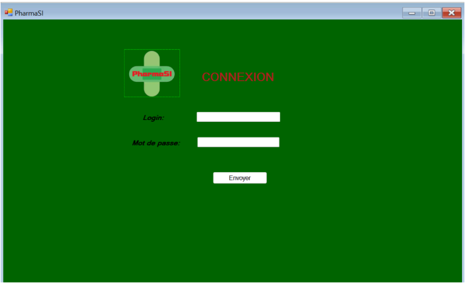
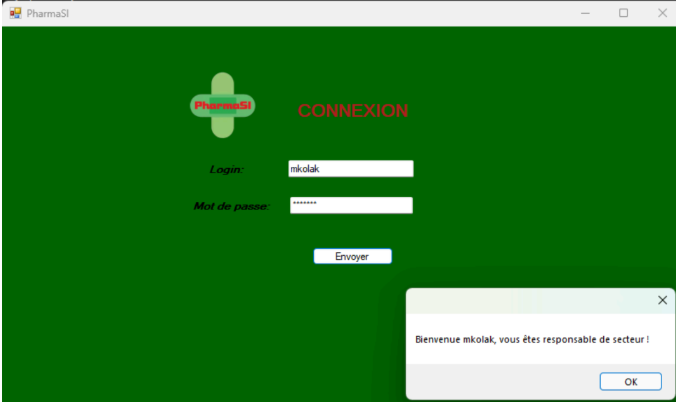
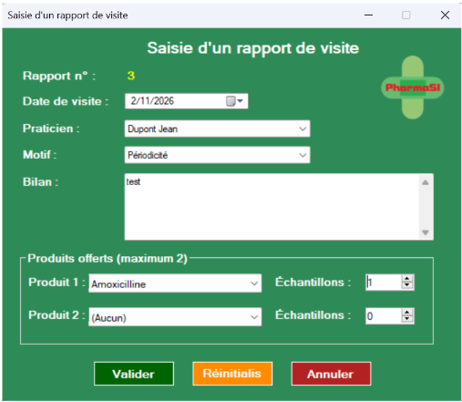
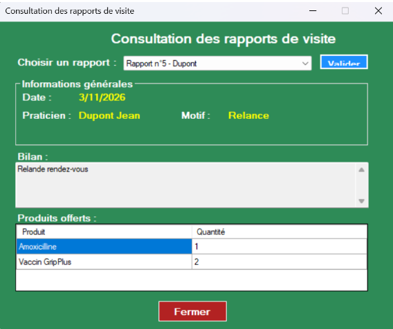

PHARMASI




LE PROJET
PharmaSi est une application de gestion destinée aux laboratoires pharmaceutiques. Elle permet de digitaliser les rapports de visite des délégués médicaux.
FONCTIONNALITÉS
- Visiteurs : Consultation fiches produits/praticiens, rédaction de comptes-rendus.
- Délégués Régionaux : Gestion d'équipe, validation des rapports.
- Responsables Secteur : Vue d'ensemble et statistiques.
STACK TECHNIQUE
Développé en C# (Windows Forms) avec une base de données MySQL. Architecture MVC pour une maintenance facilitée.